Orrery style board
This board sets the look: materials, light, sky and scale. Level layouts come from the level briefs. The Blender renders are the items to approve.
Game look, Beginner dawn: three candidates

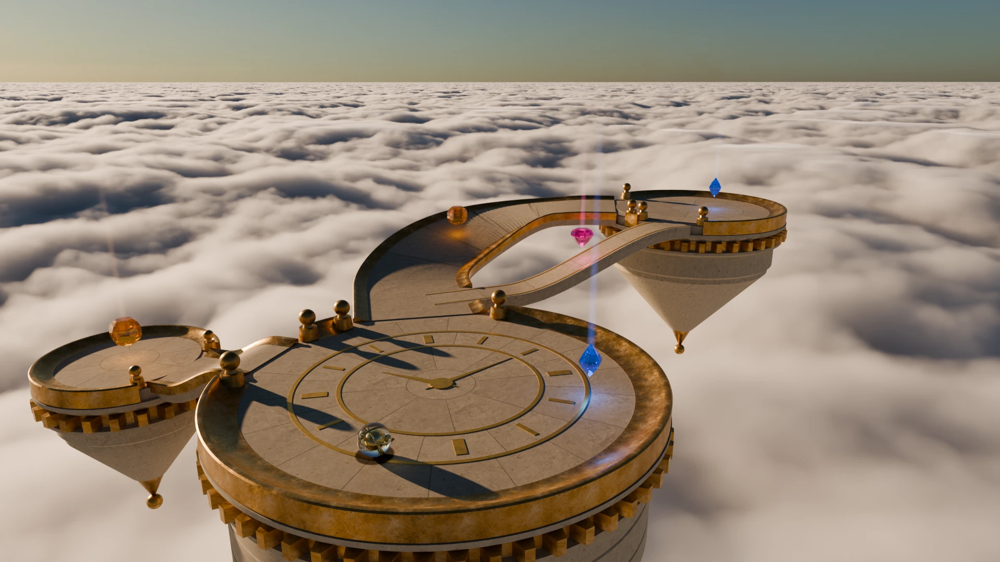

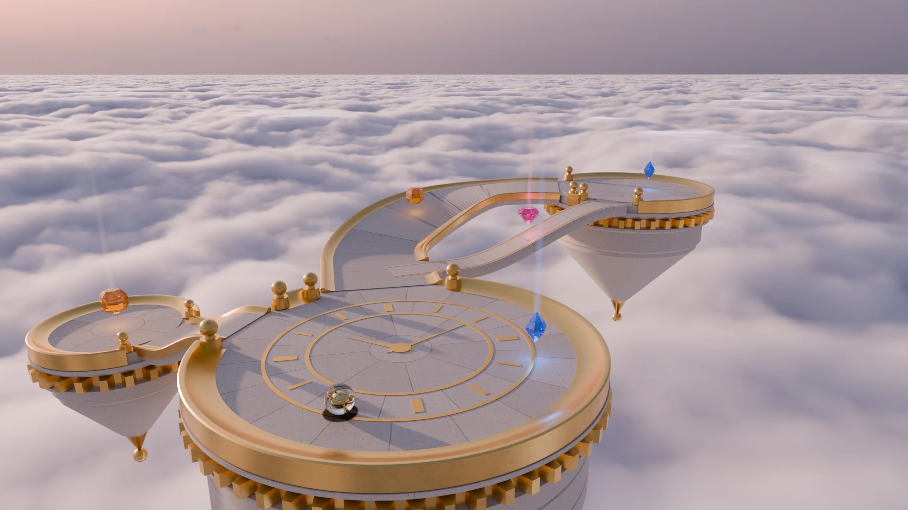

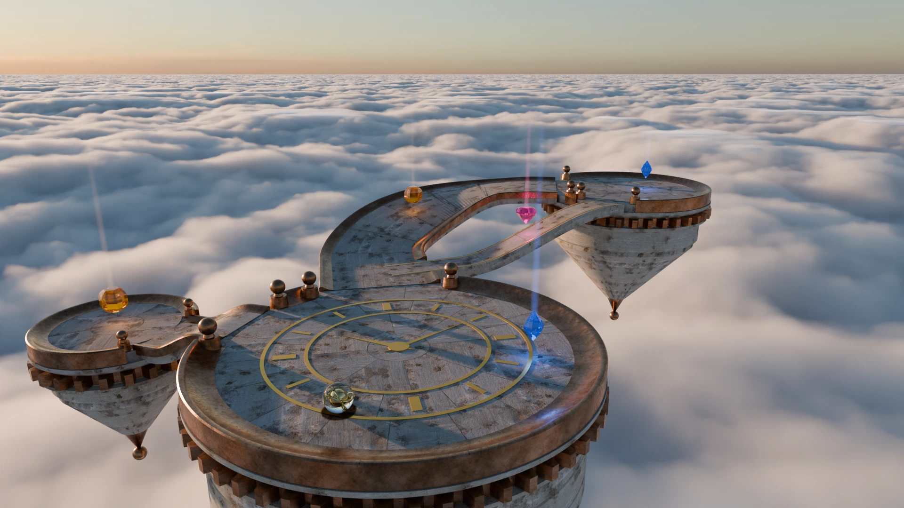

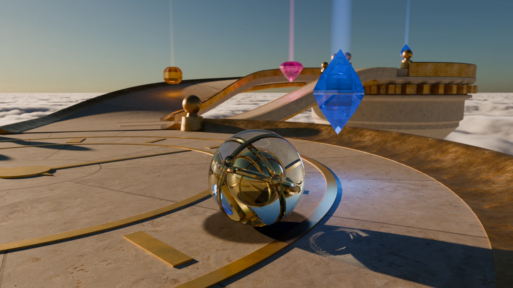
Skies of the higher tiers

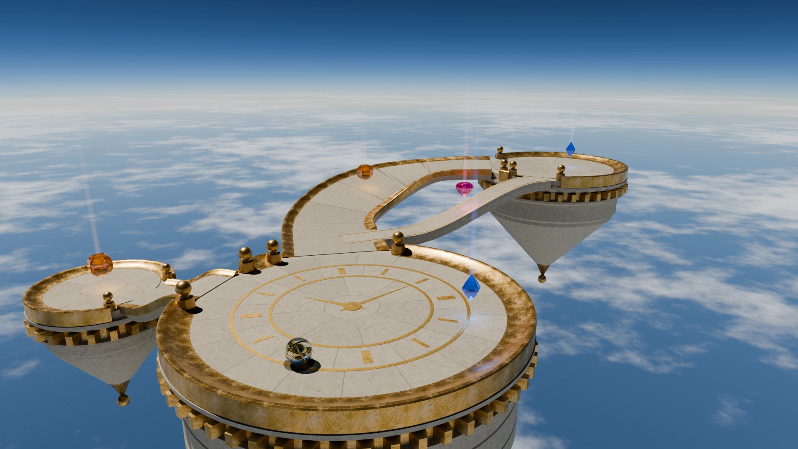

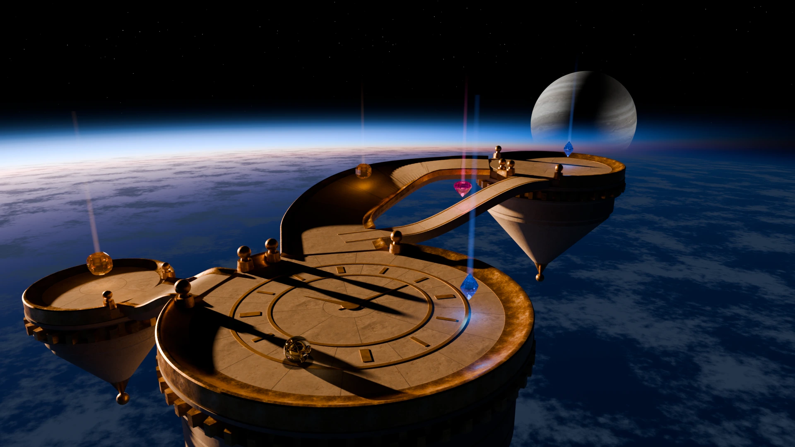
Gem

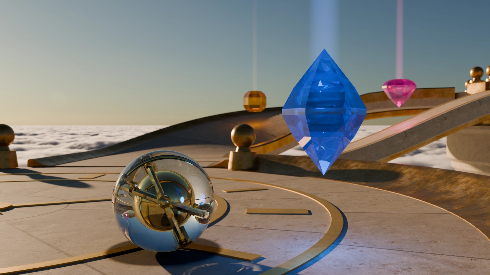
Marble

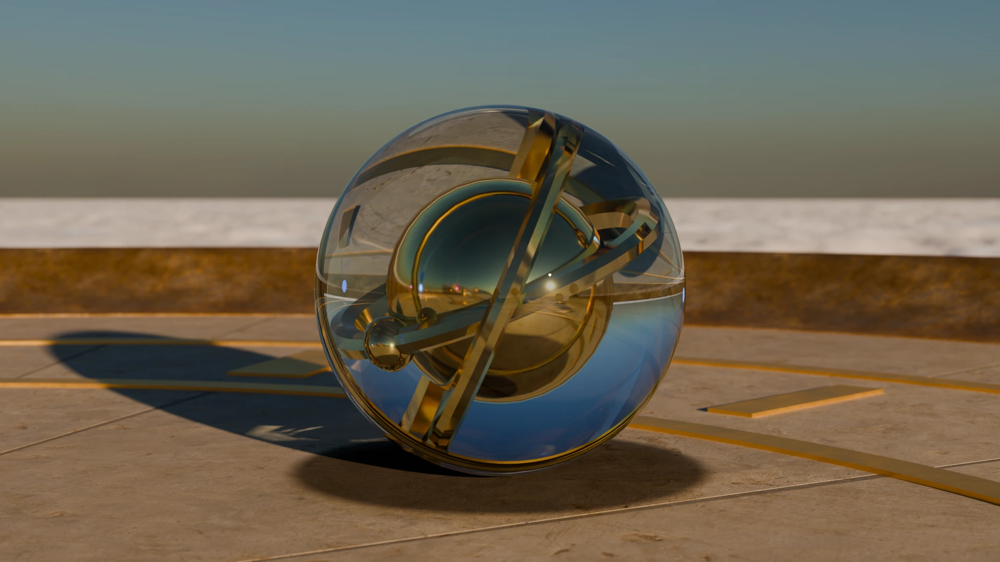

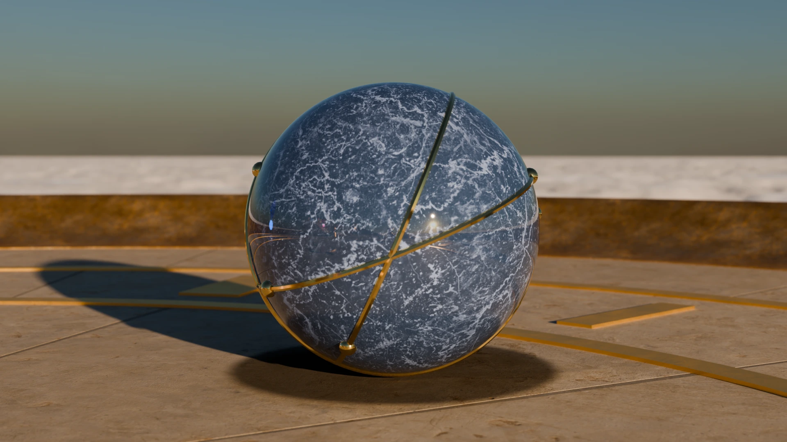
Mood references, not the game look

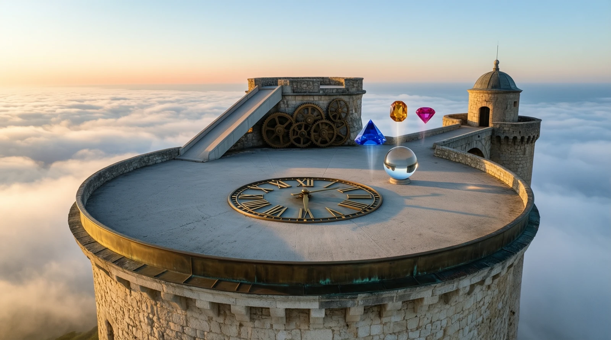

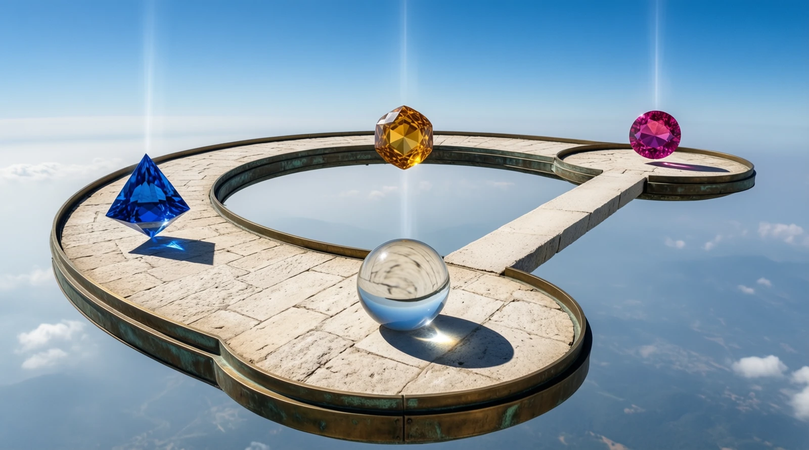

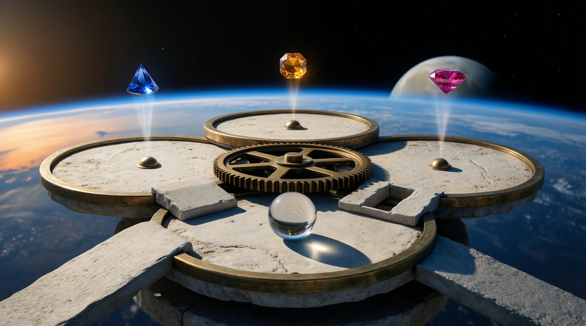

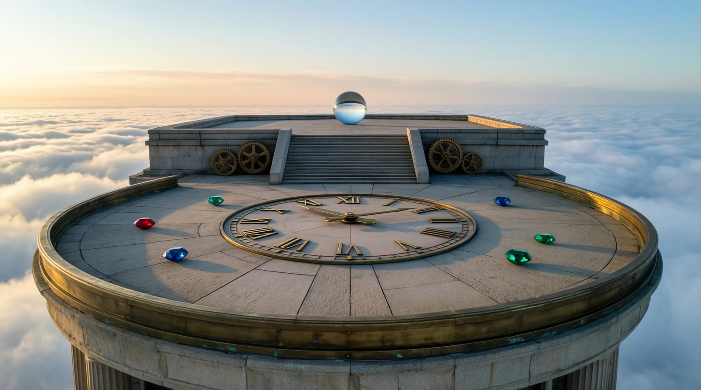

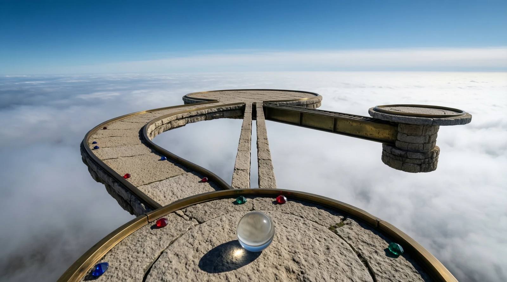

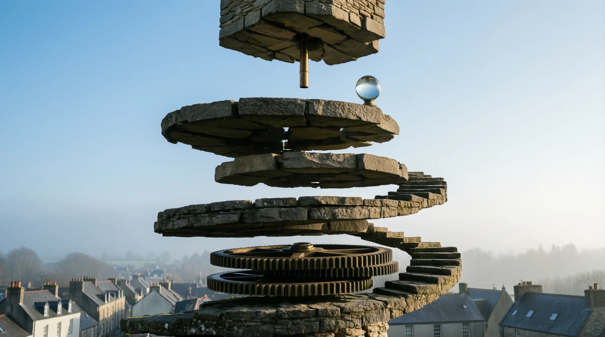

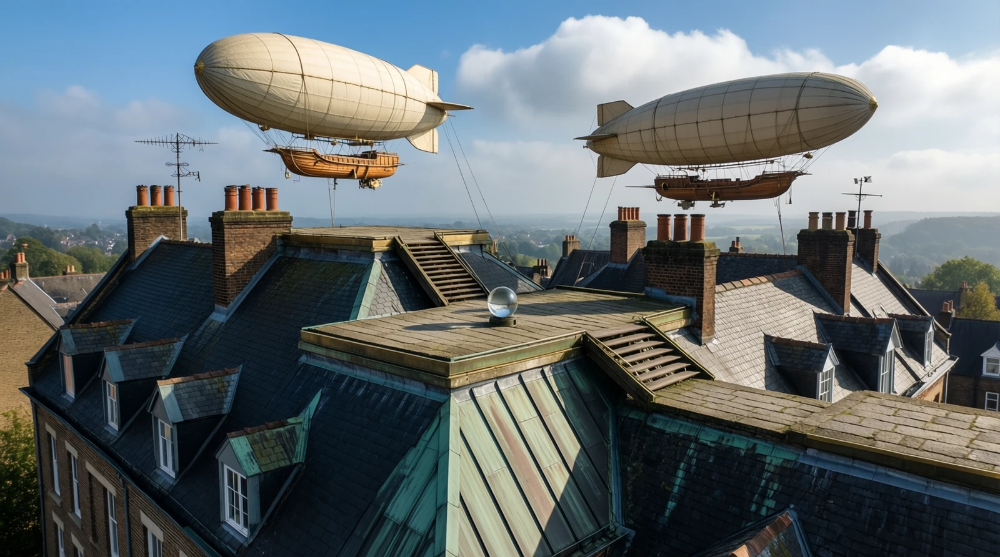
Choices
- Materials and light: Candidate A, B or C
- Marble: Marble A or Marble B
- Gem look: OK?
- Noon and dusk skies: OK?